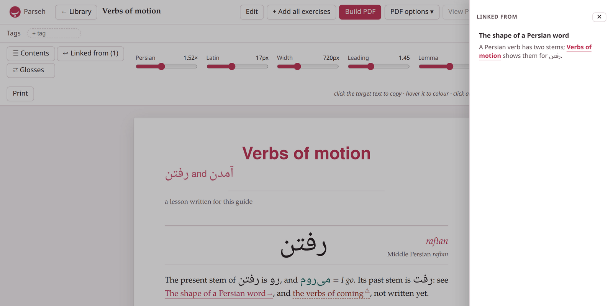

Footnotes and links
1. Footnotes#
A footnote has two halves. Where the note belongs, its citation: a caret and a name in square brackets, [^name]. Anywhere else in the document — the end is usual — its text, on a line of its own that starts with the same citation and a colon:
Persian keeps the prefix می apart from its verb without a space.[^zwnj][^zwnj]: With the zero-width non-joiner, which Persian calls نیمفاصله *nim-fāsele*, a half space.Persian keeps the prefix می apart from its verb without a space.1With the zero-width non-joiner, which Persian calls نیمفاصله nim-fāsele, a half space.
Notes
- With the zero-width non-joiner, which Persian calls نیمفاصله nim-fāsele, a half space.
- The name
- may be anything without square brackets or spaces:
1,zwnj,source-2. It is only a name; the notes are numbered by the studio. - The text goes on
- over the lines under it that are indented by two spaces (or a tab). A blank line ends it: a footnote is one paragraph.
- It may be defined anywhere
- , even inside a box, and cited from anywhere; on its own it draws nothing where it stands.
A note can also be written in place, a caret and its text in square brackets, ^[…]:
In everyday speech the verb shrinks.^[میروم becomes [میرم]{translit:mi-ram}.]In everyday speech the verb shrinks.1میروم becomes میرم.
Notes
- میروم becomes میرم.
Its text may hold marks of its own — a colour, a transliteration, a word of the target language, a link, a formula — one level deep.
How notes are numbered#
- Every citation is a note of its own
- , numbered through the document in the order they come. A
[^name]cited twice makes two notes, with the same text: write a second note, or say see note 3, rather than citing one twice. - In one paragraph
- (or one heading, list item or table cell), notes written in place are numbered before the ones cited by name. Keep the two kinds in separate paragraphs, and the numbers read in order.
- A citation whose text is nowhere
- makes an empty note. A note whose text cites itself is left empty, rather than going on for ever.
On the page and on paper#
On the screen a note is a small raised number; pointing at it, or moving to it with the Tab key, opens its text in a cloud. The notes are listed again at the end of the document, for a printed page where no cloud can open. On paper each note is a real footnote at the foot of its page — a note cited in a heading, a table, a box, a vocabulary entry or an exercise included.
The editor’s note button asks for the note’s name and its text, puts the citation at the cursor, and places the text among the other notes of the document in the order the reader meets them, so the block of notes reads like the page. The name may be left empty (the studio then calls it n1, n2…), and a name already in use is refused.
2. Links to the web#
A link is its text in square brackets and its address in round ones:
A short film on [YouTube](https://www.youtube.com/watch?v=aqz-KE-bpKQ), a[mail](mailto:teacher@example.org), and **bold** text in [a **bold** link](https://example.org).A short film on YouTube, a mail, and bold text in a bold link.
- The address must start with
https://,http://ormailto:— or#or/, a place on the same page or site. In the reading view any other address, a file name such asnotes.mdincluded, is dropped and the text shown alone. On paper it is not: the text is still printed as a link, to an address that leads nowhere useful — so link another document withdoc:(below), never by its file name. An address cannot hold a space or a bracket. - The text may hold bold, italics, a word of the target language, a
[…]{tl}stretch — but no square brackets, so no colour or other mark. - Give it a text.
[](https://…)makes a link with nothing in it to see or to click. - In the reading view a web link opens in a new tab. On paper the text is printed in the link colour, and is clickable in a PDF viewer.
- Not links here:
<https://…>, an address written bare, a title after the address(https://… "title"), and reference links[text][ref]. They show as typed.
The editor’s link button types [testo](https://) — the text to replace, and the address to finish.
3. Links to other documents#
A link to another document of the library names it by its name — its title, exactly as its front matter’s title: line spells it — after doc::
The rules of the [front matter](doc:Front matter) come first; a link withnothing in its square brackets shows the title itself: [](doc:Headings and vocabulary entries).The rules of the front matter come first; a link with nothing in its square brackets shows the title itself: Headings and vocabulary entries.
(Here, in the guide, those links go to pages of this guide with those titles; in the studio, to the documents with those names.)
- The name is compared as a file name is on a Mac or a Windows machine: case does not count, and a run of spaces counts as one. So
doc:verbs of MOTIONreaches Verbs of motion. - Leave the square brackets empty and the link shows the document’s current title — drawn as the title is, its marks coloured and its target-language words in their face. Put words in them and those show.
- The words may hold marks, one level deep: a stretch of the target language,
[[il nome]{tl}](doc:Nomi), or a coloured or transliterated word,[the [verbs]{teal}](doc:Verbs of motion). - A parenthesis in a name is written as it is when it pairs up —
doc:Table 7-6 (percentages)— and a lone one, or a backslash, with a backslash in front of it:doc:Notes \(draft.
[](doc:The shape of a Persian word) shows that document's title[the companion piece](doc:Verbs of motion) shows your own words[](doc:Table 7-6 (percentages)) a name with a pair of parentheses[](doc:Notes \(draft) a name with a lone oneIn the reading view a document link opens the other document in the same tab — a move within the library, not a way out of it. On paper there is nothing to click through to: the link’s text is printed in the link colour.
The editor’s Doc link… button writes all of this for you: it lists the other documents of the library, with a filter box, takes the words to show (optional), and puts the link in at the cursor, in place of the selected text if there is some.
A name belongs to one document#
A link can only mean one document, so no two documents of a library share a name (compared as above). Whenever a document would take a name another one has — a save, a new document’s first save, Paste LLM answer, Upload .md / .zip, Load from backup — nothing is written, and a dialog, This name is already in use, shows each clash with two fields: one to rename the document already in the library, one to rename the document being saved or added. Change either or both, and Use these names; Cancel writes nothing. A name may not hold a | either: a link to it in a table would split the cell (This name cannot be used).
When a document is renamed#
Change a document’s title: and save, and it is renamed — and every link that named it by the old name, in every document of the library, is rewritten to the new name, its words kept. Its own links to itself follow too, and so do the exercises of the decks that link to it. A change of case or spacing is a rename like any other. An editor left open meanwhile, in another tab, follows the renames when it next saves.
When a document is not there#
A link whose name no document of the library has — its document deleted, or not written yet — is not dropped. It is drawn in red, dashed, and pointing at it says which document it waits for: No document named “…” in this library — create or upload one with this name and this link will work again. With empty square brackets it shows that name. On paper it is printed like any other document link, in the link colour.
The moment a document of that name exists — made, uploaded, restored or renamed to it — the same link works again, with nothing rewritten. That is how you can write the links of a series before the documents they point to.
Which documents link here#
A document’s page has a drawer, ↩ Linked from, beside ☰ Contents, its button counting them — ↩ Linked from (1): every document of the library whose text links to this one, each with the words round its link, so you can see why it links. A document nothing links to says No document links here yet.

↩ Linked from (1) open on Verbs of motion. In the text, the link to The shape of a Persian word is drawn as a link, and the verbs of coming, whose document is not written yet, red and dashed.
Libraries, and links written before names#
A link reaches the documents of its own library only: the studio’s documents link to one another, and the notes beside one book, or beside one video, link to one another.
Documents written before links had names spelled the other document’s permanent id instead — twelve hexadecimal characters, [](doc:9f3c1a7b20de). Such a link still works, and the studio rewrites it as a link by name the first time it meets the library, its words kept.